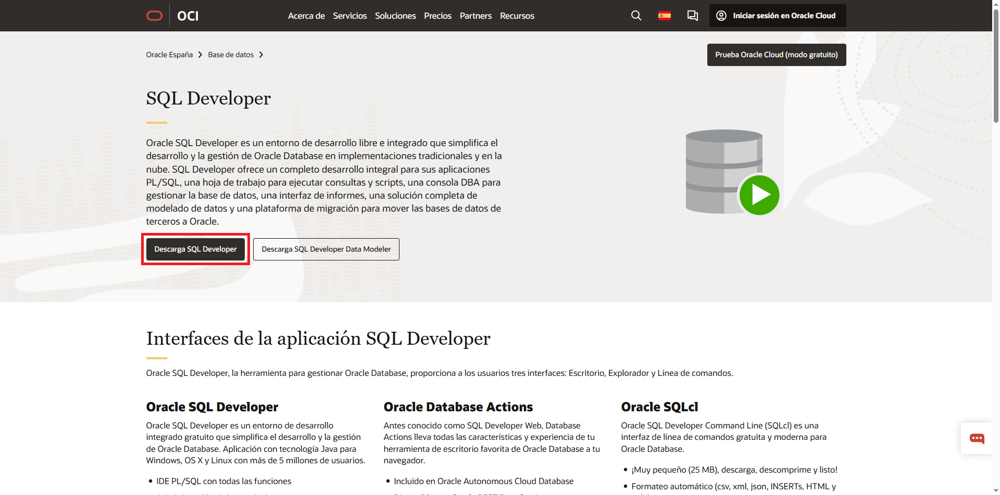
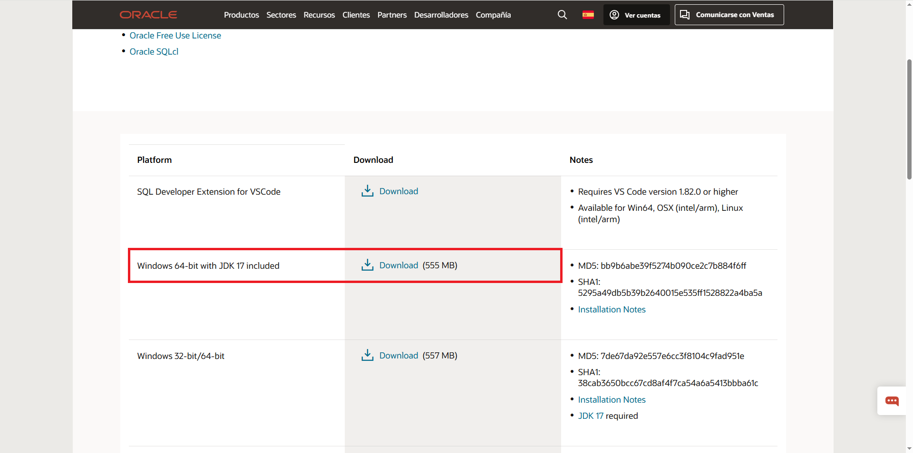
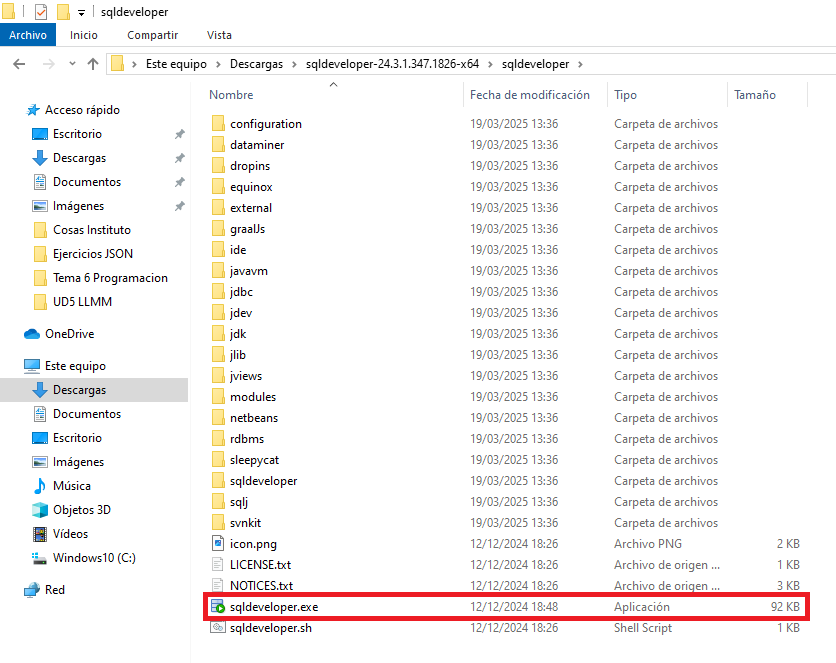
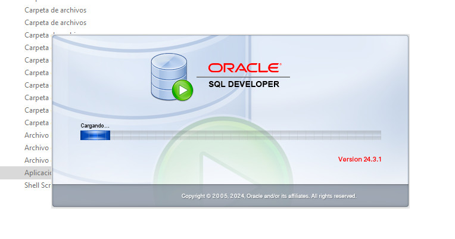
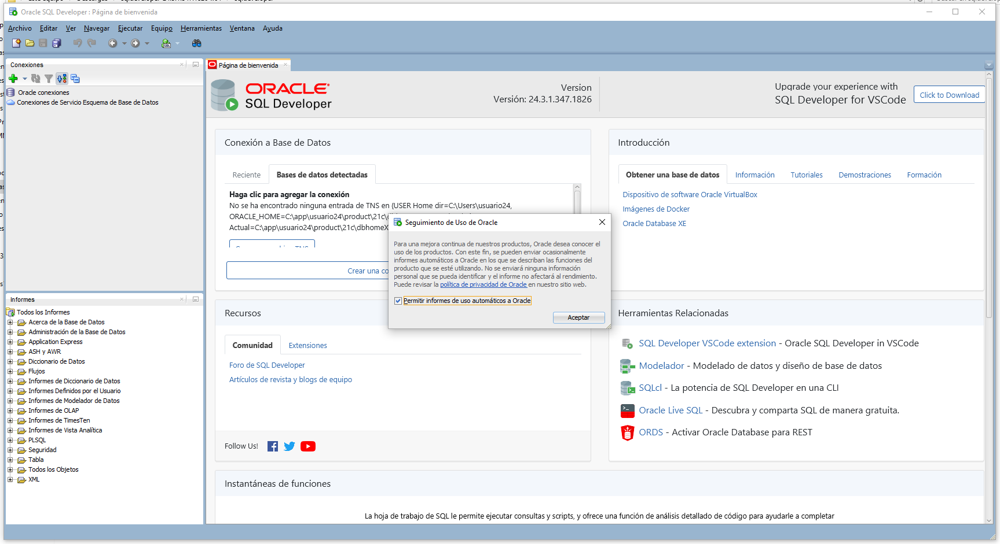

Instalación de SQL Developer
Pasos para la instalación de SQL Developer
-
Descargar el archivo ZIP de SQL Developer desde la página oficial.


- Descomprimir el archivo en una ubicación de tu elección.

- Ejecutar SQL Developer para comenzar la instalación.

- Listo para configurar las conexiones a bases de datos.
